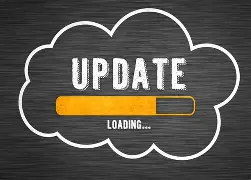

Upgrade softvéru
Späť na hlavnú stránku

Čo je upgrade?
Upgrade je aktualizácia na novšiu, lepšiu verziu softvéru.
Prináša nové funkcie, opravy chýb a bezpečnostné záplaty.
Je dôležité softvér pravidelne aktualizovať.
Typy upgradu
- Minor update — malá zmena (napr. verzia 1.0 na 1.1): opravy chýb
- Major upgrade — veľká zmena (napr. verzia 1.0 na 2.0): nové funkcie
- Security patch — bezpečnostná záplata: oprava zraniteľností
Príklady
- Windows 10 na Windows 11
- iOS 16 na iOS 17
- Pravidelné aktualizácie Google Chrome
Výhody
- Nové funkcie a lepší výkon
- Opravy bezpečnostných chýb
Nevýhody
- Niekedy zmení rozhranie, na ktoré si zvyknutý
- Môže vyžadovať výkonnejší počítač
Zaujímavosť
Staré verzie softvéru môžu mať bezpečnostné diery,
ktoré útočníci využívajú. Preto je dôležité vždy aktualizovať!
Ďalšie typy:
Demoverzia |
Freeware |
Open Source |
Adware |
Shareware |
Public Domain